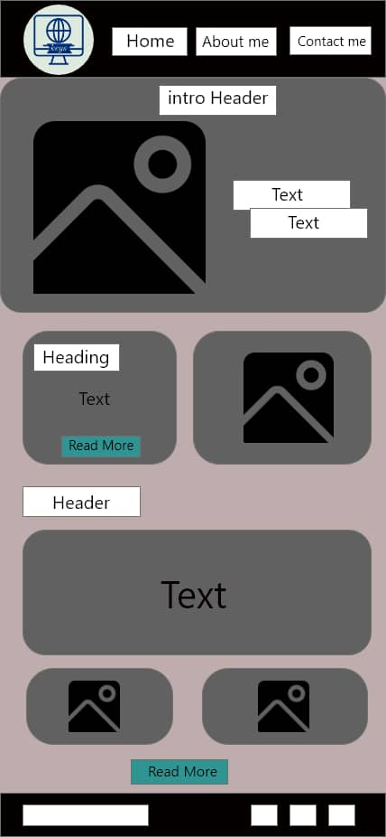
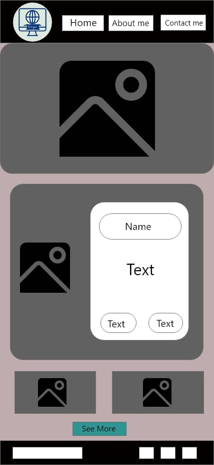
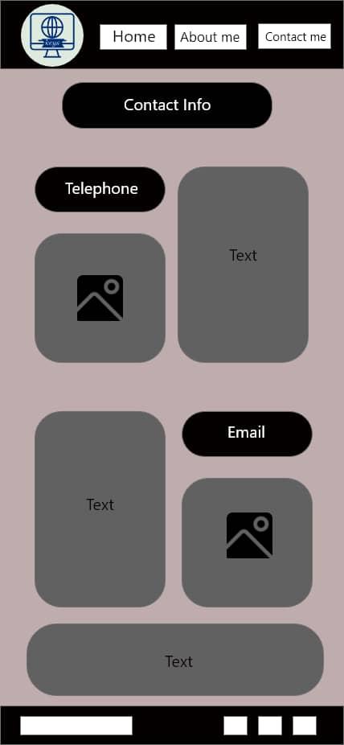

Overview
Purpose
["Welcome to my portfolio! I'm a Webdeveloper with a passion for Designing and Ecommence. Through my work, I strive to Front end design languages. Explore my projects to see how I bring creativity, expertise, and innovation to every endeavor. I look forward to connecting and collaborating with you."]
Audience
With a meticulous approach, I meticulously craft responsive layouts, ensuring that every website I create not only exudes visual brilliance but also adapts flawlessly to diverse devices and screen sizes. Beyond the syntax, I understand the artistry within code and the pivotal role it plays in conveying a brand's identity. By harmonizing HTML and CSS, I infuse personality into every pixel, creating captivating designs that resonate with users and amplify brand presence.
Branding
Website Logo

Style Guide
Color Palette
Palette URL: https://coolors.co/396e94-e7c24f-a43312-381d2a-aabd8c| Primary | Secondary | Accent 1 | Accent 2 |
|---|---|---|---|
| [#396e94] | [#396e94] | [#003554] | [#00a6fb] |
Typography
Heading Font: [Arvo]
Paragraph Font: [Franklin Gothic Book]
Normal paragraph example
Welcome to my portfolio website! Here you will find a collection of my work, showcasing my skills and expertise in [Web Development]. As a passionate and dedicated professional, I am committed to delivering high-quality results and exceeding expectations. Whether it's design, writing, photography, or any other creative endeavor, I take pride in my work and am excited to share it with you. Thank you for visiting, and I hope you enjoy exploring my portfolio.
Colored paragraph example
"Immersed in the captivating realm of front-end web development, I wield an extensive command of HTML and CSS to architect visually enchanting and functionally seamless websites. Through a journey driven by an unyielding passion for digital craftsmanship, I've honed my skills to transform concepts into immersive online experiences. My dedication to precision and an inherent flair for design enables me to breathe life into ideas, fashioning interfaces that seamlessly blend aesthetics with functionality.
Navigation
Welcome to my portfolio! Explore my work by navigating through the sections above. 'Home' is your starting point, where you'll find an introduction to my creative journey. 'Portfolio' showcases my projects, providing insights into my skills and experiences. 'About' offers a glimpse into who I am and my passions. 'Contact' is where you can reach out to discuss collaborations or simply connect. Feel free to delve into each section and discover the essence of my work and aspirations."
Site Map
Content
Home page
Welcome to my portfolio website! Here you will find a collection of my work, showcasing my skills and expertise in [Web Development]. As a passionate and dedicated professional, I am committed to delivering high-quality results and exceeding expectations. Whether it's design, writing, photography, or any other creative endeavor, I take pride in my work and am excited to share it with you. Thank you for visiting, and I hope you enjoy exploring my portfolio.
Images for the Home page


[About]
[As a front end developer, I specialize in creating visually appealing and user-friendly websites and applications. With a strong understanding of HTML,and CSS, I am able to bring designs to life and ensure seamless functionality across various devices and browsers. I am constantly staying up-to-date with the latest trends and technologies in web development.]
Images for the Page 2


[Contact]
I am a web developer based in Accra, Ghana, with a passion for creating dynamic and visually stunning websites and applications. With a strong foundation in HTML, and CSS, I am able to bring my clients' visions to life while ensuring seamless functionality across various devices and browsers. I am dedicated to staying ahead of the curve in the ever-evolving world of web development, allowing me to deliver modern and innovative solutions for my clients. Living in Accra, I am constantly inspired by the vibrant culture and rich history of Ghana, which often influences my work and design aesthetic. I am committed to delivering high-quality digital experiences that not only meet but exceed my clients' expectations. Thank you for considering me for your next project, and I am excited about the possibility of working together.
Images for the Page 3
Wireframes
Create three wireframes for your site. One for each page and list them here
Home
[My journey in front-end development isn't solely about mastering languages; it's about transforming digital landscapes. I constantly immerse myself in the ever-evolving landscape of web technologies, staying at the forefront of innovations and trends. This relentless pursuit of knowledge empowers me to integrate the latest tools and methodologies seamlessly, delivering cutting-edge designs that surpass industry standards.]
[About me]
[Collaboration is at the heart of my ethos. I thrive on partnering with forward-thinking individuals and businesses, translating their visions into captivating online realities. Whether it's optimizing user experiences, enhancing brand identities, or crafting pixel-perfect layouts, I'm committed to exceeding expectations.]
[Contact]
[ My portfolio is a testament to the diverse projects I've undertaken, each showcasing my commitment to excellence and innovation. From clean and minimalist designs to immersive and interactive interfaces, my work resonates with versatility and creativity. I invite you to explore my portfolio, where every line of code narrates a story of innovation, creativity, and a relentless pursuit of digital excellence.]
